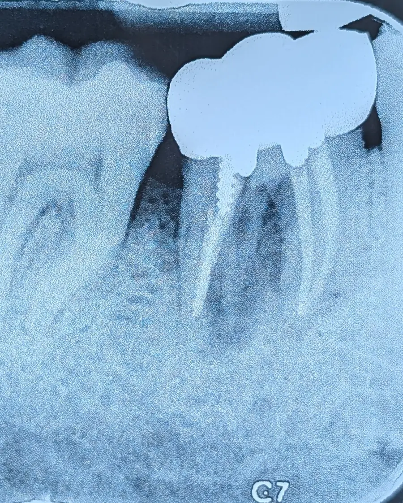
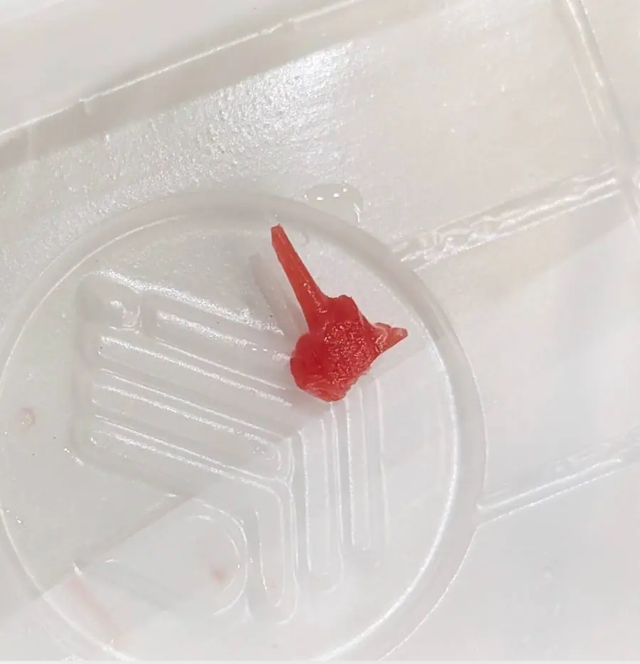

نسخه استخراجشده؛ ترجمه یا تأیید علمی انجام نشده است. وضعیت: captured
بیمار دو سال پس از روکش با درد و علائم عفونی برگشته است. در بررسی تخصصی معلوم میشود یکی از کانالها در درمان اولیه میس شده است. طراحی کور و پستی که آن روز انتخاب شد، راه درمان مجدد را چقدر باز گذاشته است؟

در زمان درمان، کیفیت درمان ریشه بهطور کامل قابل ارزیابی نبود و درمان را درمانگری با سابقهی نامشخص انجام داده بود؛ درمانگر ریشه نامهی تأیید داده بود. به همین دلیل در طراحی بازسازی کرونال، هدف صرفاً استحکام حداکثری نبود؛ حفظ امکان مداخلهی مجدد در آینده بهعنوان یک اصل در نظر گرفته شد.
نوع پست و طراحی کور را طوری انتخاب کن که:
این رویکرد مستقل از نوع مادهی کور است و به منطق طراحی مربوط میشود، نه نام متریال. بازسازی کرونال اینجا فقط یک مرحلهی ترمیمی نیست؛ بخشی از استراتژی مدیریت ریسک در درمان ریشه است. گاهی انتخاب درست، انتخابی است که قابل برگشت باشد.
در آمادهسازی رزین برای پست و کور، معمولاً دو رویکرد ذهنی برای ترتیب تراش وجود دارد:

هیچکدام ذاتاً «درستتر» نیستند. ترتیب تراش بخشی از استراتژی دسترسی و کنترل میدان است، نه یک قانون مطلق.
در بسیاری از تراشهای پروتزی، ترتیب مراحل از قبل تعیینشده نیست؛ حین کار و بر اساس دسترسی، دید، آناتومی و محدودیتهای بالینی شکل میگیرد. گاهی موفقیت درمان نه به «نوع تراش»، بلکه به توانایی ایجاد تدریجی فضا برای ادامهی مسیر وابسته است.
نوع سؤال: ساخت کلمه · 5 خانه
حروف منبع: ر · ح · ی · ا · ط